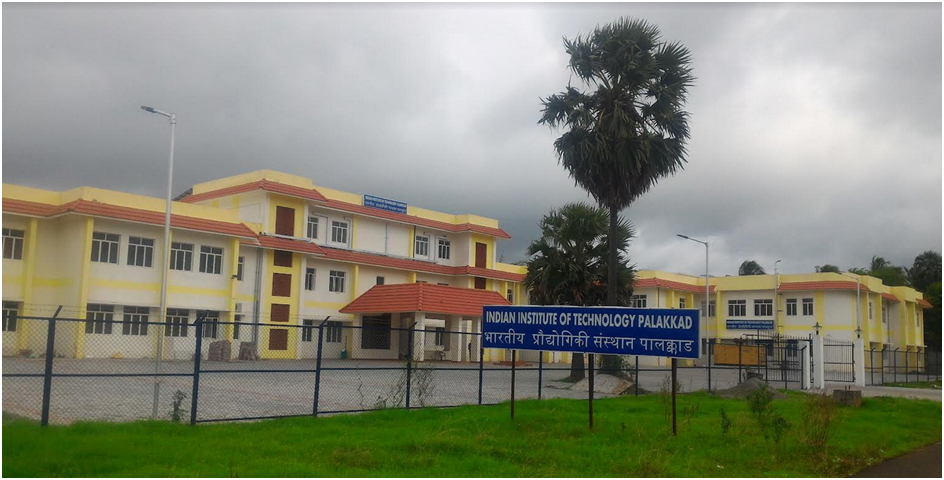
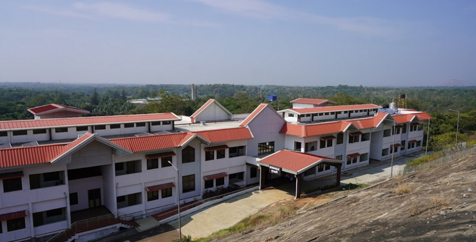
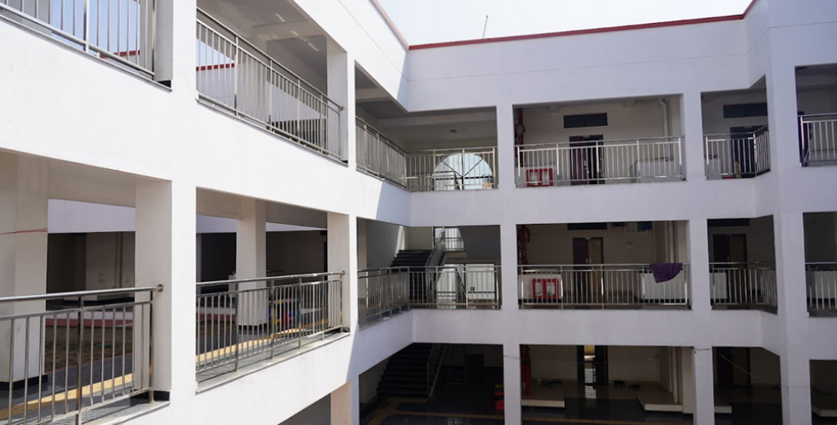

About Palakkad and Kerala
Palakkad in Kerala, where we are located, is known for its rich traditions, great historical events, and personalities connected with it, and its sylvan surroundings, especially the Silent Valley rain forests and the famed palmyra trees.
Palakkad is known as the rice bowl of Kerala. Celebrated as a major granary of Kerala, Palakkad is the gateway to the state from the North in the form of the nearly 40-kilometre break in the Western Ghats, called the Palakkad Gap. Palakkad is located on the northern bank of the Bharathappuzha River
The Kerala state is flanked by the Arabian Sea in the west and the towering Western Ghats in the East and networked by 44 interconnected rivers, Kerala is blessed with a unique set of geographical features that have made it one of the most sought after tourist destinations in Asia.
About Campus


We currently operate from two campuses: the temporary campus, in the premises of the Ahalia Integrated campus, Kozhippara, and a transit campus nestled in a corner of the permanent campus, Nila in Kanjikode.
The Academic Block, Ahalia Campus where IIT Palakkad started and partly functioning
The Nila Campus (Transit Facilities)
The Nila Campus (Transit Facilities)
IIT Palakkad’s permanent campus is fast coming up on a picturesque 500-acre plot at the foot of the Western Ghats and is situated a few kilometres from the Palakkad Railway Junction and about 60 kilometers from the Coimbatore International Airport.
Hostel Life


IIT Palakkad is fully residential with separate hostels for girls and boys. Students are provided accommodation on a twin-sharing basis and all rooms have attached bathrooms. The hostel buildings and the academic building are situated within a radius of three hundred meters. In Nila campus, the institute has three hostels Bageshri, Brindavini, Tilang.
The necessary facilities like a spacious dining hall and a well-equipped recreational area, an indoor games area, a fitness center, RO based drinking water system and a heavy-duty washing machine on each floor of the hostels are in place. The common space in the hostel is Wi-Fi enabled. The rooms have either WiFi or LAN connectivity. Each hostel has a common room for recreation which has a television, newspapers and selected magazines (decided by the student body).
- FAQ’s
- Campus Map
- IITPKD Faculty research Profile
- Feedback
- Students Council
- Buy & Sell @ IITPKD
- Campus Facilities
- Guest House/Hotel Partners
- Gallery
- Activities
- Facebook
- LinkedIn
- Twitter
- YouTube
- placements
Address:
Indian Institute of Technology Palakkad,
Nila campus,
Near Gramalakshmi Mudralayam,
Kanjikkode, Kerala 678623,
India.